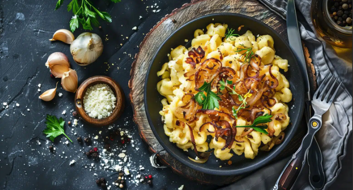

My Favourite Foods
by Amelie Fink
Since I was born in bavaria, I really love Käsespätzle. Its a bavarian food that contains home-made noodles, onions and lots of cheese.

However, these are my three all-time-favourite Foods
- Flädlesoup (pancakes cut into pieces in soup)
- Potato Gratin
- Mac'n Cheese
The importance of Culinary Cuisine
Culinary Cuisine. Everybody knows the specialities of their region's Cuisine. Still, we don't pay all that much attention to them. This is quite sad, since it is important to cherish your own culture by being aware of its traditions. While visiting other countries, or regions, we notice the Culinary Cuisine immediately. So why not start taking a look at our own? Let me know what you think about this topic in the comments!
Add a Comment